Old Italian industrial plugs
Back before the advent of the IEC 60309 industrial connectors, various types of plugs and sockets were in use in Italy (and other European countries) for industrial, heavy-duty and three-phase applications.
Note that, while three-phase supplies aren't common in Italian homes, most businesses and factories do have all phases available - so it makes sense that special plugs would be made to connect three-phase equipment.
Three-phase ceramic plug and sockets
Rating: unknown
These ceramic items are some early examples of the most common kind of plug once used for three-phase devices in Italy. While their rating isn't indicated, given their age, it's almost certain that they'd have been used on a supply fed by a 127/220V transformer (so, with 220V between phases) rather than a 220/380V one, which the three-phase plugs shown later are rated for.
The plug uses three round pins - earthing isn't present - each the same distance from each other. This means that the plug could be connected in three different ways, though that isn't an issue with three-phase supplies. A neutral connection isn't available, so it could have only been used with balanced loads such as motors.


The terminals for the sockets are simple screws on the back of the device; after being wired, the outlet is then mounted to the wall using the three holes available. A cutout is present on the top to feed the supply cable through.
Wiring the plug is done by feeding the cord through a hole in the centre, and then twisting the wires around some nuts screwed into the pins (which have a threaded section). There isn't any sort of strain relief.


Three-phase plugs
Rating: 15A 380V
These are some later three-phase plugs and connector sockets from the 60s/70s. Both earthed and non-earthed models are shown: the two types of plug are essentially identical, but with a fourth pin in the centre for the earth connection and a matching contact on the socket. Note that, though the non-earthed socket also has a hole in the middle, this is just for the screw holding it together.
The earthed plug was manufactured by OVA, the socket by MAPL, while both the non-earthed plug and socket were made by Isbea. They're all made of rubber, as was common at the time on industrial plugs and some domestic ones as well. The housing on the sockets extends a bit further, forming a sort of recess which helps avoid accidental contacts with the pins of the plug; a very useful feature.
 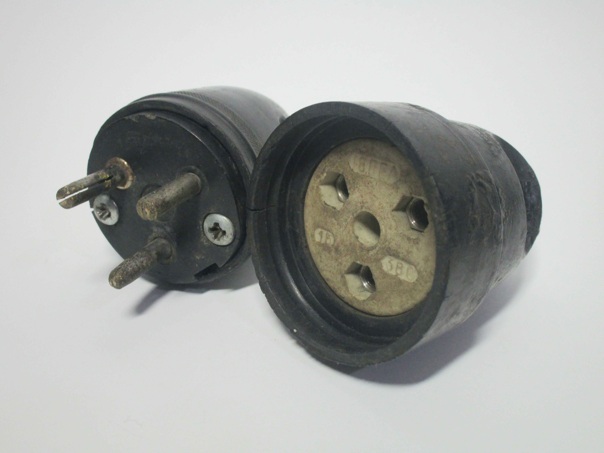
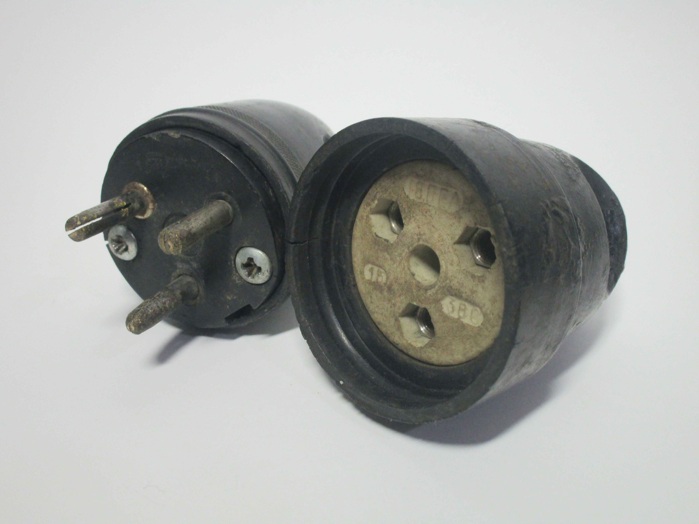
{kind=link}

Three-phase wall socket
Rating: unknown
This is an earthed three-phase socket with earth connection, likely from the 50s, made by the company Saigir from Trieste. Its rating is unknown, though given the age it's likely 15A 380V.
As with other early power sockets for in-wall use, it's installed by unscrewing by hand the bakelite rings surrounding the (threaded) contacts and removing the front cover, which is made of acrylic. The four wire connections, for the three phases and earth, are on the back of the device; after the socket is wired, two screws are tightened, which push the "claws" towards the side of the wall box, thus holding it in place.
While this design, with the threaded rings and clear cover plate, allowed the socket to be easily concealed - either behind a wallpaper or by painting the front cover - being able to access live parts fairly easily and without any tools is obviously a safety risk.
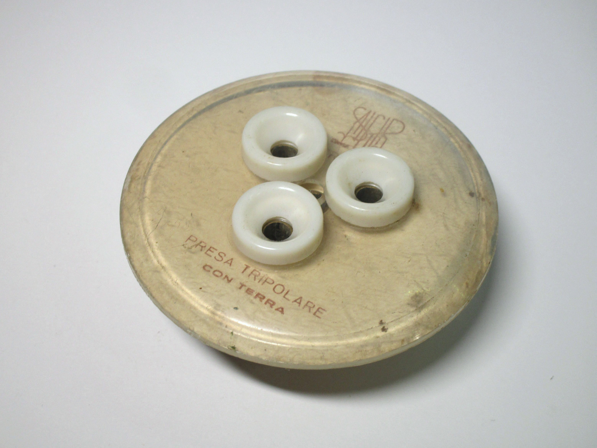 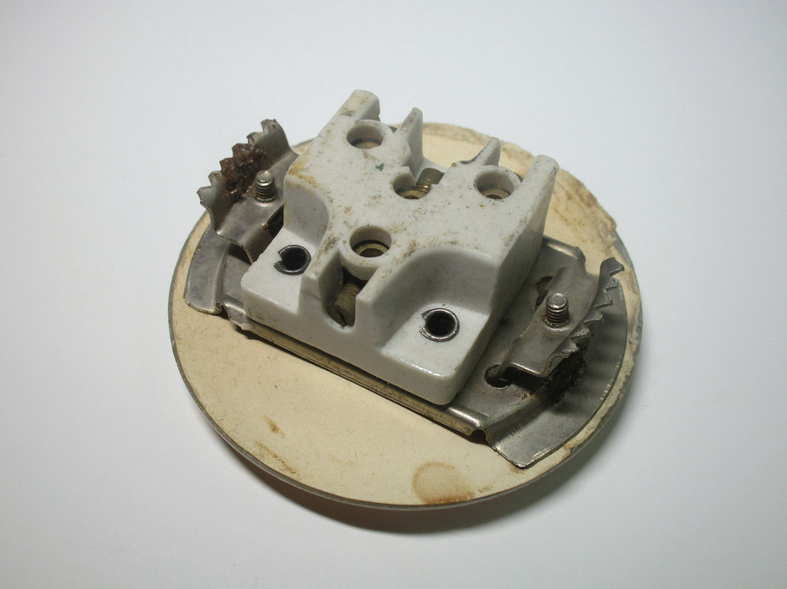 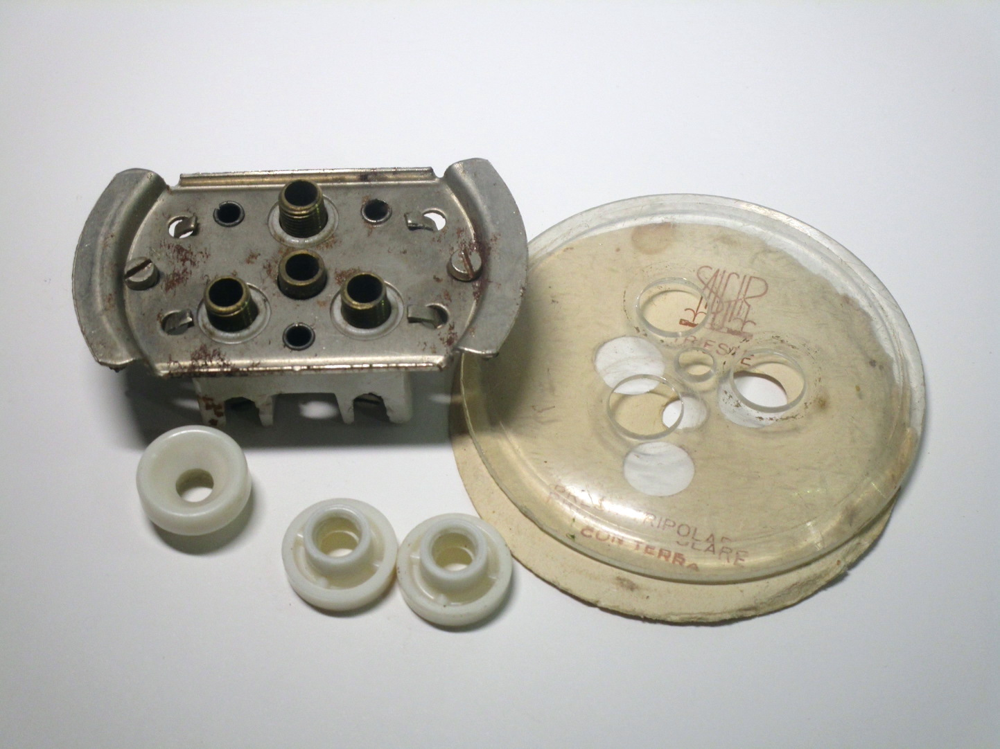{kind=link}
{kind=link}
{kind=link}
30A three-phase plug
Rating: 30A 380V
This is a larger version of the plugs shown above, rated for 30A instead of 15. Its design is identical to the other ones, just at a larger scale, and with the unusual feature of the central earth pin being noticably smaller than the ones for the phases.
The condition of this particular example, made by OVA, is immaculate, as it's never been used. This can be confirmed by the cord entry on the back not having been punched through; an interesting way to install a power cable.
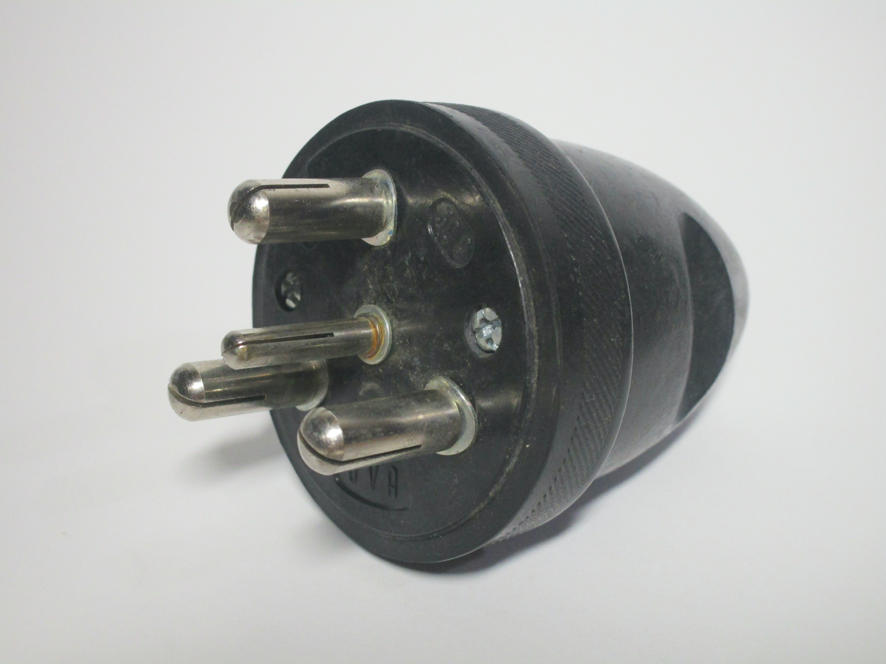 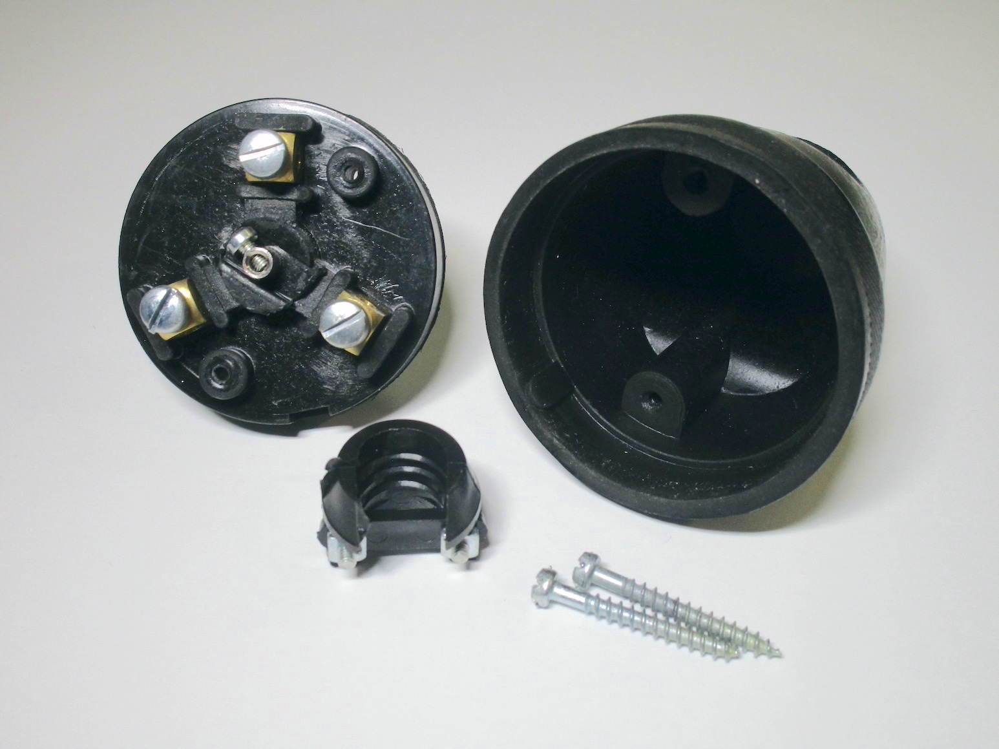{kind=link}
{kind=link}

30A single-phase plug
Rating: 30A 250V
Aside from three-phase designs, special high-current plugs for single-phase applications were also available, such as this 30A example, built by an unknown manufacturer. It's made of bakelite and has two large round pins for the line and neutral alongside a flat one for the earth.
It's interesting to note that this kind of plug looks very similar to a modern French 20A version, though with a vertical earth pin rather than a horizontal one. It's unclear if there's any relation between the two.

 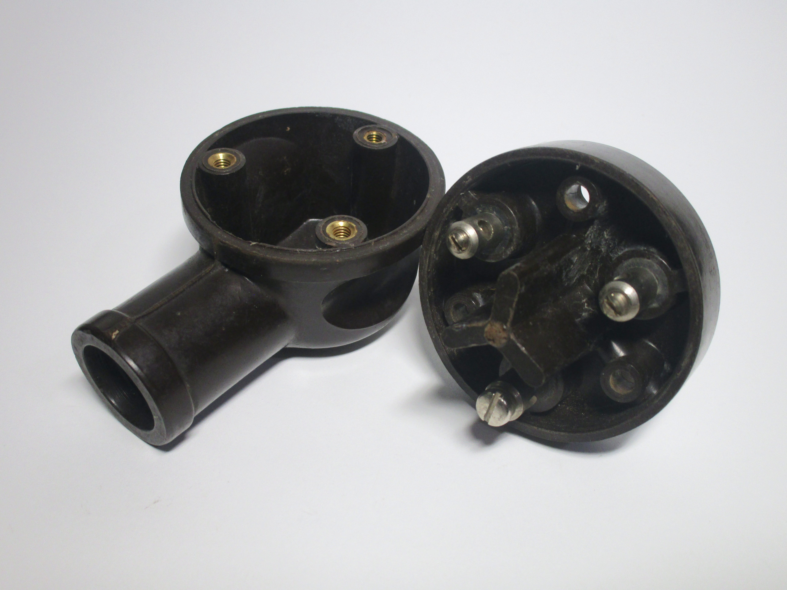
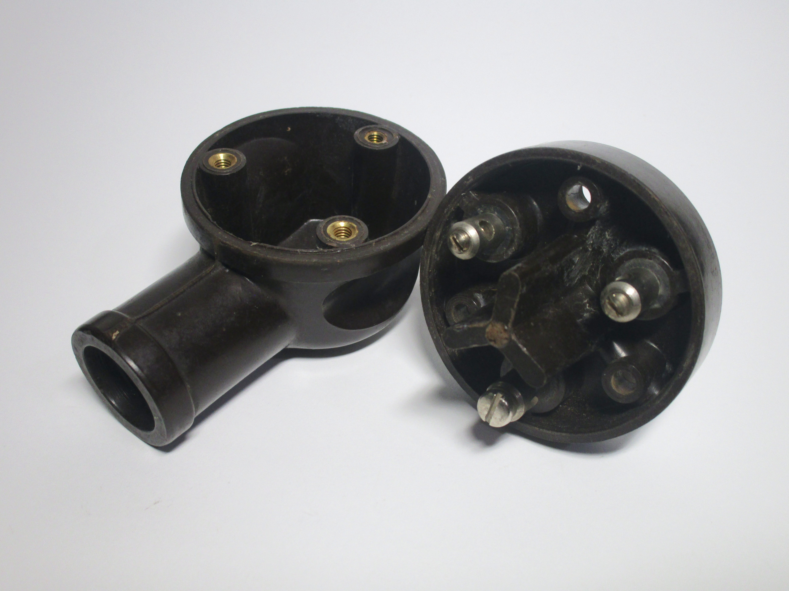
{kind=link}
Earthed splitter for three-phase plugs
Rating: 15A 380V
This two-way adaptor, manufactured by OVA, allows for connection of two three-phase devices. It's earthed, and thus uses a four-pin plug. As with the connectors of roughly the same age shown previously, this item is also made of rubber, for extra resistance in the types of environment it could have been used in.
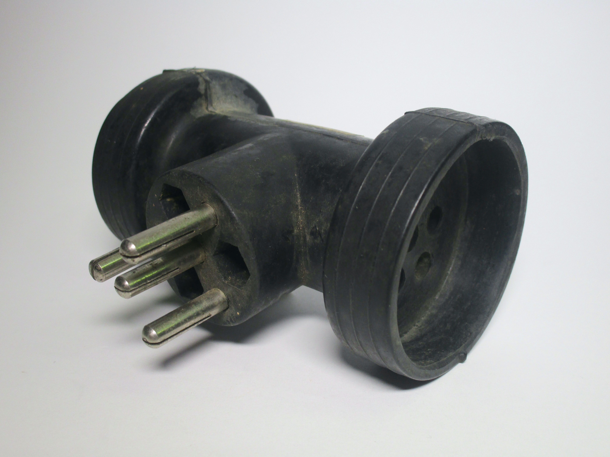 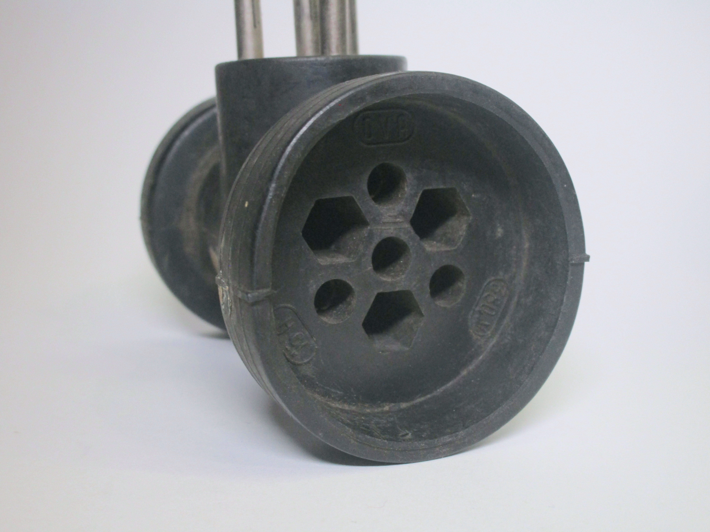 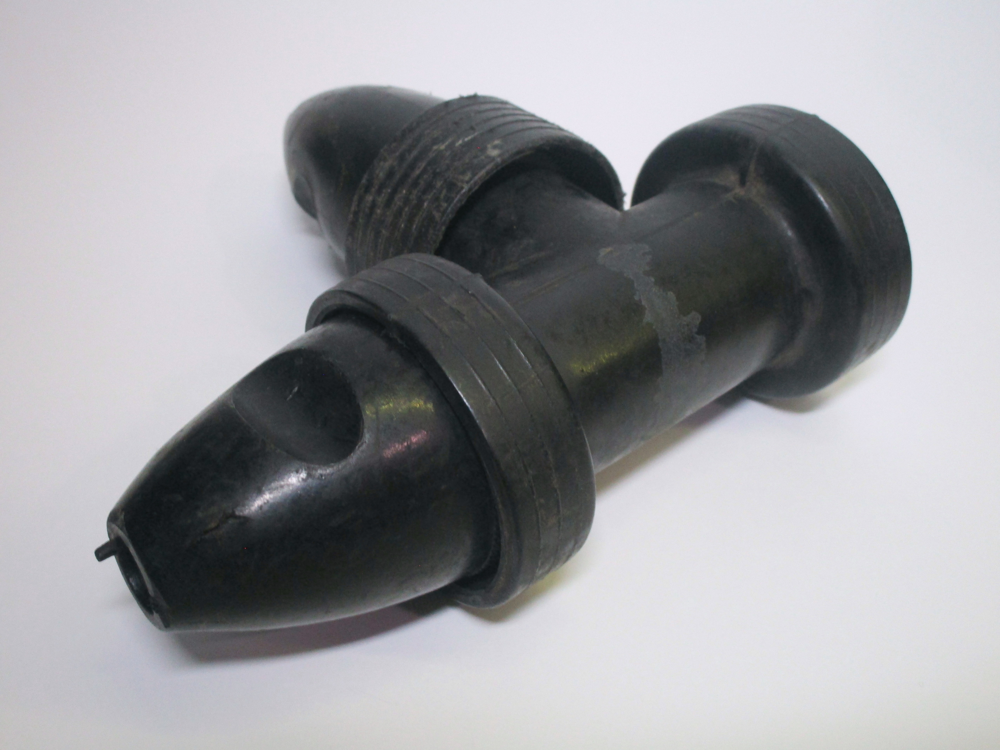{kind=link}
{kind=link}
{kind=link}